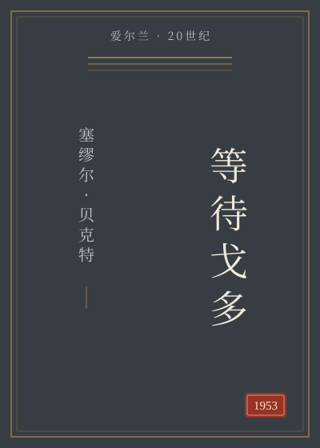

等待戈多
一、基本信息
| 作者 | 贝克特 |
|---|---|
| 成书/出版 | 1953年1月5日巴黎首演（泰阿特罗·德·巴比伦剧院，通说待核） Samuel Beckett — Encyclopaedia Britannica (by Martin J. Esslin)（百科全书） |
| 国别/地区 | 爱尔兰 |
| 时代 | 现当代 · 20世纪 |
| 体裁 | 话剧（两幕剧，荒诞派戏剧） |
| 语言 | 法语原作（作者自译英文） |

《等待戈多》人物关系图（等待的几何）（人物关系图）
二、创作背景
创作（Britannica）：贝克特——英法双语写作的爱尔兰剧作家（1906—1989）——以法语写成此剧（其自述'用法语写作因为简单'大意，通说待核），自译英语。1953年1月巴黎首演（Britannica：first staged in Paris in January 1953）。
荒诞派戏剧：Esslin（Britannica 撰稿人）以本书为'荒诞派戏剧'（Theatre of the Absurd）的命名性代表作——首演之初观众离席、批评界哗然，数年后成为经典（通说待核）。
旧金山监狱首演（1957年圣昆廷监狱为1400名囚犯演出——通说待核）成为'最懂这出戏的观众'的著名公案。
三、内容脉络
两幕结构完全对称：黄昏的乡间路口，一棵秃树（第二幕长出几片叶子）。流浪汉弗拉基米尔（狄狄）与爱斯特拉冈（戈戈）在等一个叫戈多的人——'戈多来了咱们就有救了'（原文意，公有领域）。
波卓与幸运儿：地主波卓用绳子牵着'幸运儿'上场——幸运儿负重、听命、'思想'（一段令人崩溃的长篇独白剧——通说待核）；次日再来时波卓失明、幸运儿失语。
小男孩：每幕结尾一个男孩来传话——'戈多先生今晚不来，明晚准来'（原文意，待核）。男孩是否同一个孩子？'我从来没有见过他'——两位老人甚至怀疑起自己的记忆。
结尾：'咱们走吧？'（他们不动。）'嗯？咱们走不走？'（他们不动。）——幕落。观众等待的'行动'永远不来：'什么也没发生，发生了两次'（评论家 Vivian Mercier 的著名评语——通说待核）。
四、主要人物表
| 人物 | 身份 | 说明 |
|---|---|---|
| 弗拉基米尔（狄狄） | 流浪汉 | '保持清醒者'：记住昨天、思考、维护约定——'我们是有觉悟的'（原文意，待核） |
| 爱斯特拉冈（戈戈） | 流浪汉 | 靴子、萝卜与睡意——身体性的人 |
| 波卓 | 地主 | 第二幕'失明'——时间与暴力的报应（通说解读） |
| 幸运儿 | 奴隶 | '思想'独白：以最学术的语言说最荒诞的话（通说待核） |
| 小男孩 | 信使 | 戈多的不来的证明者 |
| 戈多 | 从未出现 | 'God'与'Godot'的关系是最大悬案（贝克特本人拒绝解释：'如果我知道，早在剧中说了'——通说待核） |
五、主题与艺术特点
- 等待的结构：人类境况的极简模型——'希望'与'打发时间'的辩证；两幕的重复=生活本身（通说）。
- 对话的崩解：两人对话常在'嗯？'与矛盾中折返——语言不再是交流工具（Britannica：minimalist, stripped-down writing focused on existential themes）。
- 贫困与依附：波卓—幸运儿、狄狄—戈戈的主奴镜像（通说解读）。
- 不确定性的伦理：连'是不是昨天的树'都不确定——记忆与存在的不稳（通说）。
- 艺术特点：对称结构、循环对话、沉默与动作的记谱法（贝克特后期的'精确舞台'）。
六、影响与评论
- Britannica（Beckett 条目）：'his most celebrated play'（其最受赞颂的剧本）；贝克特1969年获诺贝尔奖但拒绝赴斯德哥尔摩演讲（Britannica）。
Samuel Beckett — Encyclopaedia Britannica (by Martin J. Esslin)（百科全书） - Britannica（Esslin 撰）：荒诞派戏剧的命名与经典化——本剧为教科书案例。
Samuel Beckett — Encyclopaedia Britannica (by Martin J. Esslin)（百科全书） - 全球上演：从圣昆廷监狱到战争前线的演出史（通说待核）；'Waiting for Godot'成为日常习语（本条为语言事实，词典待核）。
Samuel Beckett — Encyclopaedia Britannica (by Martin J. Esslin)（百科全书） - 中文接受：1960s台湾《剧场》杂志引介、1980s施咸荣译本与高行健的推动（通说待核）。
Samuel Beckett — Encyclopaedia Britannica (by Martin J. Esslin)（百科全书）
七、阅读建议
难点
- '没有情节'——两幕几乎重复：对照细节的微小变化（树的叶子、波卓的失明）是关键。
- 对话的'废话'是节奏设计——朗读体验比默读有效。
- 戈多是谁？——贝克特拒绝回答，保持开放是唯一正确的读法。
- 施咸荣译《等待戈多》（人民文学出版社《荒诞派戏剧选》，通说待核）：通行译本。
- 《贝克特选集》（湖南文艺出版社，通说待核）：研究型。
- 英文本：Grove Press 版（含 Beckett 自注，通说待核）。
通读两幕 → 对照两幕差异清单 → 观看录像（1988年 Beckett 自导法兰西喜剧院版等，通说待核）→ 讨论戈多谜题与波卓的'失明'。
八、待核实
- 首演日期与场地（1953-01-05 Théâtre de Babylone，导演 Roger Blin 说）待核。
- 圣昆廷监狱演出（1957 SF Actor's Workshop）细节待核。
- 施咸荣译本信息待核。
- Vivian Mercier 'nothing happens, twice'评语出处（《爱尔兰时报》1956书评，通说）待核。